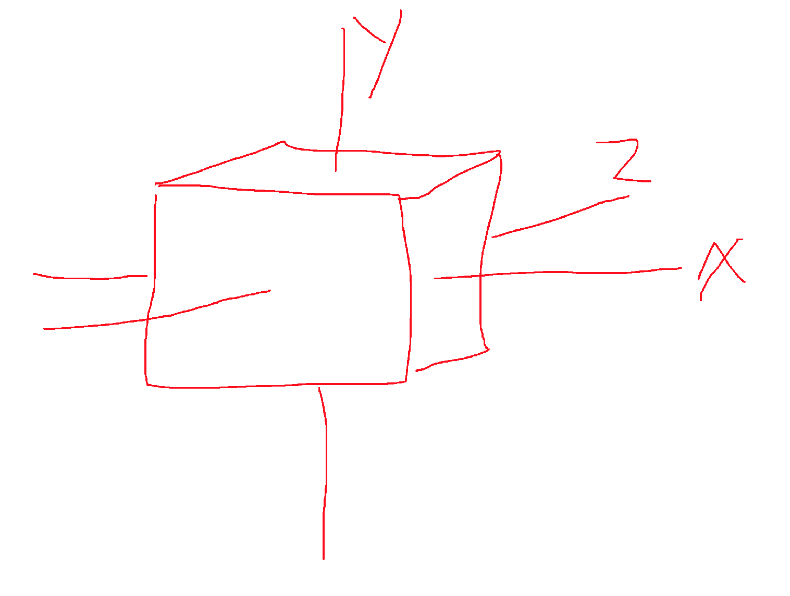

CSS/ Animation, rotate
 위 상황을 보면, 이처럼 구성되어있다. X축은 말 그대로 가로를 긋는 축. Y축은 세로를 관통하는 축. Z축은 가로와 세로를 관통하는 축으로 구성된다. 따라서 rotateX의 경우에는 위아래 반전을 rotateY의 경우는 세로축을 중점으로 좌우가 반전을 rotateZ의 경우에는 관통축을 중점으로 좌우 롤링한다. transform-style을 지정할때 flat 을 지정하게 되면, 평면에 구현하게 되는것이기 때문에, Z축을 구현할 수가 없다 (2차원 개념) transform-style preserve-3d을 지정하면 부모객체가 3d로 구현되기 때문에 Z축이 생기게 된다. ---- 만약 지속적인 회전이 아닌, 뚝뚝 끊어지는 것을 원한다면, 어쩔 수 없는 스크립트를 사용하는 방법밖엔 없을듯 하다. -----
위 개념을 생각해보면, 스퀘어(정사각형) div를 6개 만들고, x축을 기점으로 2개를 90도 180도를 돌리고,
Y축을 기점으로 0, 90, 180, 270을 선회시키면, 정사각형이 만들어진다.
부모를 preserve-3d (특색을 갖는) 를 지정한 뒤, rotateX(80deg); 를 지정하게 되면, 부모는 x축을 기점으로 선회한다.
그 후 css
animation: cubeRolling 3s infinite;
animation-timing-function: linear;
를 지정해주면, 된다.
@keyframes cubeRolling {
from {
transform:rotateX(0deg) rotateY(0deg) rotateZ(0deg);
}
to {
transform:rotateX(700deg) rotateY(360deg) rotateZ(360deg);
}
}
이렇게 할 수도 있고, 큐브를 위처럼 0% 50% 100% 이런식으로도 지정이 가능하다.
헥사곤의 경우에는 face (면)이 6개이다. 일단 부모의 rotateX를 사용하여 X축으로 90도 회전시킨다. (시계방향) 그러면 부모는 뒤로 누운 모양새가 된다. 자식 div 또한 x축을 기준으로 각 면적에 맞게 60도씩 증가시키며 rotate시킨다. 그러면 div 6개가 크로싱되는 모양새. 최종적으로 부모를 기준으로 Z축을 띄워주면, 원통모양의 육각형이 완성된다. 그다음은 뭐 rotate를 사용.